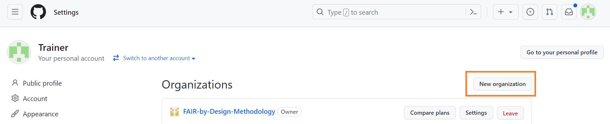
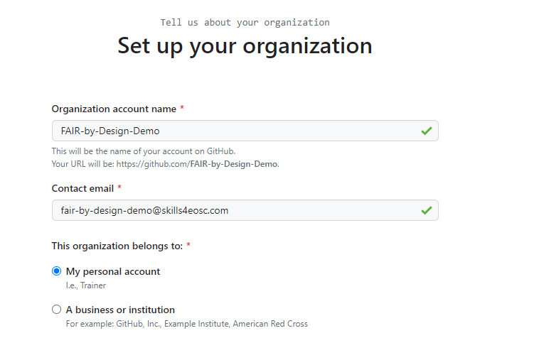
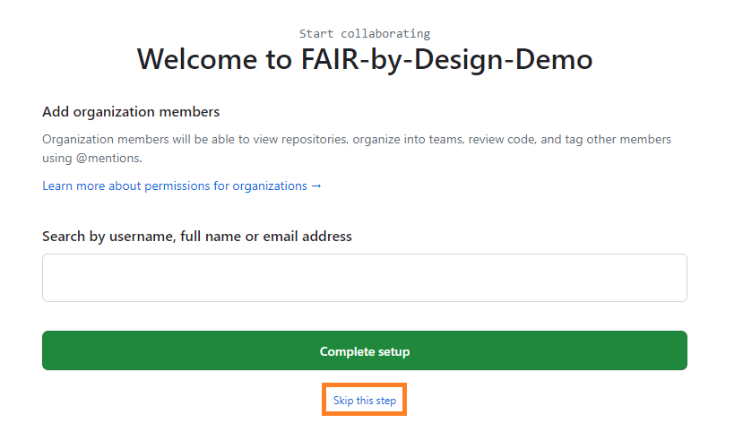
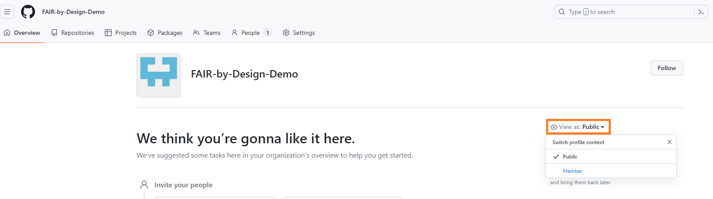
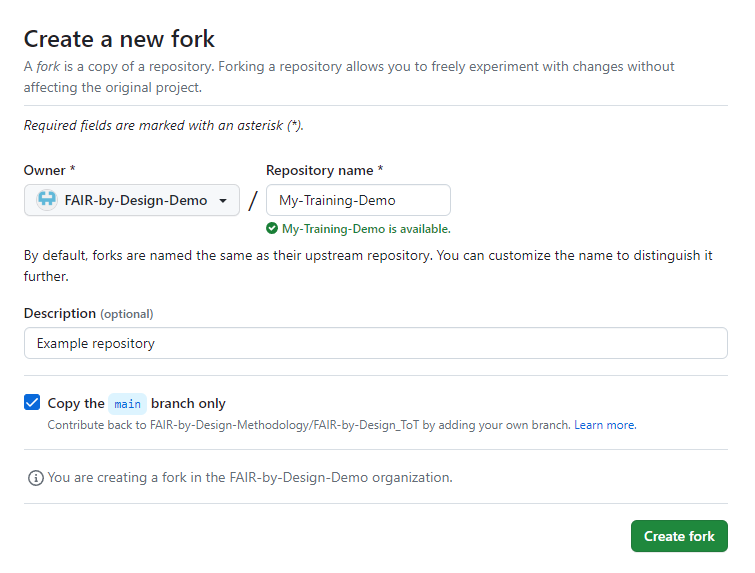
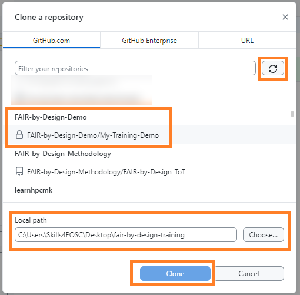

Introduction to Markdown and Git
The purpose of this learning unit is to introduce relevant tools and file formats required for developing FAIR-by-Design learning objects. Once a working environment consisting of the recommended tools is in place and the initial concepts regarding the underlying file formats have been adopted, the instructional designer is then ready to start with production of the learning objects themvselves. The first step on this journey is the introduction to an open text format – Markdown, and a robust version management system, Git.
Learning Objectives
- Use a version management system for versioning file contents
- Recognize and use open file formats for producing FAIR learning objects
- Use freely accessible software tools for working with the open file formats
- Setup an automated publishing workflow for processing any changes made to the learning materials
- Evaluate the accessibility of learning objects
- Categorizing learning repositories
- Write reusable self-assessment quizes
- Perform quality assurance check
Target Audience
- Attendees of the FAIR-by-Design ToT live webinar
Duration
60 mins
Prerequisites
- TBD
Learning Tools
- Training BBB room
- Browser
- Menti access or BBB quiz interaction
- GitHub Desktop Software
- Obsidian Markdown Editor
File Formats
During the production phase of the FAIR-by-Design learning objects, three important aspects need to be taken into account at all times:
- The intermediary and final file formats of the produced learning objects;
- The required software tools for producing and consuming the learning objects;
- Ensuring the future-proof compatibility and longevity of the learning objects.
We will tackle all of these aspects during the training, starting with the introduction of the recommended intermediary and final file formats. An intermediate file format is a file format used during the production phase of the learning objects, and is aimed at direct contributors to the content itself. A final file format is obtained by transforming the intermediary file format, making it ready for consumption by a wider audience, focusing on its visual representation, interactivity, and ease-of-use.
Markdown
Markdown is a text-based intermediary file format that is easy to learn and use. It is the recommended intermediary file format for designing FAIR-by-Design learning objects, with a number of advantages over alternatives:
- plain text, editable with any editor across all possible platforms at any time;
- compatibility with version management systems, granular preview of changes down to the character level between file revisions;
- easy collaboration in the case of multiple contributors when combined with the use of a version management system;
- large eco-system of dedicated tools including: editors, convertors, validators;
- plethora of options for obtaining a visually appealing final format representation.
Markdown has basic support for document formatting through the use of a specific, easy-to-learn, syntax for defining distinctive elements: headings, bulleted lists, numbered lists, quotes, tables... Users have the option of either manually formatting their documents by using the respective syntax, or using a What You See Is What You Get (WYSIWYG) editors which provide a more beginner friendly user interface, similar to traditional text processors. No matter the chosen approach, the end-result is the same, and compatibility with the complete Markdown ecosystem is preserved.
Markdown Alternatives
Traditional alternatives to Markdown documents are the native file formats of the various popular text processors in use today, such as Microsoft Word (.docx) and the Open Document Text (.odt) file format which is the primary one for many open-source alternatives such as LibreOffice and OpenOffice. However, while these file formats are well-established and popular today, they are not the first choice when producing FAIR-by-Design learning objects. Both formats are binary in nature, meaning that version control management using external tools is much more complicated, and changes cannot be granularly followed. Due to this, collaboration on these documents is more challenging, especially in cases when no third-party, proprietary, cloud-services are involved. Compatibility is also negatively impacted, since formatting consistency is not guaranteed between different text processors, or even between different versions of the same text processor in certain cases. This has a negative impact on the overall accessibility, restricting the use of such materials only to users with a compatible computing platform and text processor version, which in many cases can be a proprietary, commercial, software.
The FAIR-by-Design methodology by no means restricts the use of alternative intermediary file formats to Markdown. Users can continue using traditional text processor formats such as .docx with which they might be more familiar, as long as they are aware of the drawbacks of such an approach. The previously discussed restrictions should be carefully evaluated especially in terms of version control management, and ensuring compatibility with newer software versions in the future.
Markdown's Relationship to Final File Formats
Perhaps the most popular final file format for Markdown is HTML. An additional advantage of Markdown is the simplicity with which it can be converted to an HTML representation whose visual properties can be further customized to achieve the desired effect. Such HTML pages can be hosted publicly for free, allowing seamless access to the learning materials for anyone, from anywhere, as long as they have a device with a web browser at hand. A popular approach today is to combine multiple such HTML pages and produce an online book, commonly referred to as a Git book, a name that is derived from the Git version management system used for the intermediary files comprising the book. One of the focus points of this training is the creation of such Git books.
An alternative final file format that is also widely popular and supported by Markdown documents is PDF.
The Slides Conundrum
In practice, Markdown can be used both for writing text heavy documents that can later optionally be converted to a Git book, as well as for slides design, with the end-goal of creating a presentation. Software such as Quatro and Marpit facilitate the use of Markdown, along with all of its previously discussed benefits, for creating presentations which can be exported either to HTML or PowerPoint (.pptx) documents. However, at present, the creation of interactive, and visually rich presentations with these tools is a more involved process, requiring greater experience with the specific framework itself (be it Quatro, Marpit, or an alternative). To overcome this, and to reduce the technical complexity of creating presentations, traditional tools from this space such as PowerPoint, LibreOffice Impress, Google Slides... can be used. These presentations can be deposited in version management systems such as Git, but it will not be possible to leverage its main benefits, due to the binary nature of the underlying file format.
Version Management
Git is the most popular version management system in use today. It is available for all popular platforms either as a first-party command line utility or through third-party graphical user interface (GUI) clients. Git uses the concept of repositories which can granularly manage the versions of all objects placed within it. File changes are committed to a repository and each commit is automatically associated a unique and random identifier. In addition to this identifier, each commit is also described by its author, commit title and commit description. A single Git repository can be used by multiple users, each contributing and committing their changes. To facilitate remote collaboration, a Git repository can be shared publicly or privately. Git hosting services, such as GitHub and GitLab offer this functionality today for free. While Git can also be used independently from such hosting services, either completely locally and offline or by devising a custom synchronization workflow with third parties, in reality this is rarely the case.
Git repositories can also be forked, meaning that their current state is copied to a brand new repository, preserving all history. The user who has initiated the fork can then make any desired changes directly to their own fork of the repository. If desired, such changes can optionally be reconciled and added to the original repository from which the fork was created, provided that they are accepted by the original owner. This is possible due to the fact that the repositories will have a shared history at least up until the point when the fork was made. In case their files have diverged (e.g., both the original and forked repository contain changes to the same files), and if these changes are conflicting (e.g., changes to the same part of a given document), Git will mark these changes and leave it up to the owner of the repository to decide how to proceed, and what version to accept.
Below is a list of common Git related terminology which will be useful for the remaining of the training:
- Git repository – a collaborative space where files can be versioned
- Git commit – a granular change of a single or multiple files in the repository, identified by a random unique identifier, the committer's name, email address, short commit title and an optional longer commit description. A commit can contain file additions, modifications, removal, or relocation to a different directory.
- Git clone – an action to download locally an existing Git repository. A repository hosted on a public Git hosting service such as GitHub can be cloned by anyone (assuming it is public) on their local machines. Once downloaded, users can explore the repository and optionally send their contributed changes upstream, if they have been assigned the necessary permissions.
- Git fork – a 1:1 copy of an existing Git repository. A fork of an existing repository results with the creation of a brand new repository which will have a shared history with the original one up until the fork was made. The owner of the forked repository will be the user who initiated the fork. The original owner of the repository does not have any right in the forked repository by default.
- Pull request/Merge request – when changes are made to a forked repository, they can be contributed back to the original repository by creating a merge request or a pull request (the terms are synonyms, depending on the platform either one can be used). With this approach a privileged user from the original repository from which the fork was initiated can review the changes and decide whether to accept them, modify them, or outright reject them. Forks can exist independently of the original repository forever.
Exercise: First Steps with Git
As part of the preparation for this training, participants should already have downloaded and installed the GitHub Desktop Client, and created a free personal account on GitHub.
To simulate the preparation of FAIR-by-Design learning objects, you are going to create a fork of the FAIR-by-Design Learning Object Templates repository, and then clone it locally as to continue working on the materials.
When using GitHub, repositories can either be hosted under the personal profile, or under an organization. Hosting a repository under an organization provides greater flexibility, since the organization name can be customized, and multiple owners can be added to an organizational repositories, unlike personal ones. Repository owners can edit the settings of the repository, such as enable third-party integrations or change its visibility level.
We recommend to create and use a dedicated organization on GitHub for hosting repositories related to the development of FAIR-by-Design materials. Follow these steps to complete the initial Git setup for your new FAIR-by-Design repository
- Login to Github.
- Click on the profile picture in the right hand corner and select
Your organizations. -
Create a new organization by clicking on the
New organizationbutton.
-
Choose the
Freeplan by clicking on theCreate a free organizationbutton. All of the features in theTeamplan are available for free to public repositories when using theFreeplan, as of this writing. -
Enter the desired name for the new organization, and provide your email in the
Contact emailfield. Select yourself as the organization owner by answeringMy personal accountto theThis organization belongs toquestion.- Note that the selected organization name will be part of the URLs for all repositories created within the organization. For example when creating a repository
materialsunder theFAIR-by-Design-Demoorganization, the complete URL will behttps://github.com/FAIR-by-Design-Demo/materials.

- Note that the selected organization name will be part of the URLs for all repositories created within the organization. For example when creating a repository
-
In the next step you should be presented with an option to invite additional members to your organization. This can be skipped for now if no collaborators need to be invited at this point.

-
You should be redirected to the home page of your newly created organization. By default the organization will be public, meaning that its information such as name and description can be accessed by anyone. If desired, you can restrict the visibility of the organization to only members by using the privacy controls on the right hand side of the landing page.

-
The next step is to create our first repository in the organization by creating a fork of the FAIR-by-Design Learning Object Templates repository. To do so, navigate to its page and click the
Forkbutton in the right-hand corner. -
Make sure to set your newly created organization as the owner of the repository. Finish filling-out the forking form by entering the desired repository name and its description. By default forks are created with the same name as the original (upstream) repository, but this can be customized directly on the form.

-
After a few moments the forking process will be completed and you will be redirected to the homepage of your new repository.
- The final step before we can start working on the development of learning objects is to clone the repository locally. To do so, we will use the GitHub Desktop Client that should already be installed as part of the preparation steps before attending the training. Open the application and authenticate using your GitHub credentials.
- Once logged in, you will be asked what name and email address you would like to associate with your future commits. You can either accept the defaults which are your GitHub username as the name and your GitHub provided email, or you can customize them as you see fit.
-
Using either the first run wizard that should start automatically after logging-in for the first time (
Clone a repository on your hard drive...button) or by manually selectingFile -> Clone repository, make a local copy of the forked repository. If the repository is not yet visible, make sure to click the refresh button. Make sure to specify the desired location on your filesystem where to place the data from the cloned repository.
At this point we have created our own fork of the FAIR-by-Design templates repository and we have also cloned (downloaded) all of its contents locally, so we are ready to start producing our very own FAIR learning objects. However, one final step remains, and that is to go over how to work with Markdown files.
Suggested Reading
- Hoebelheinrich, Nancy J, Biernacka, Katarzyna, Brazas, Michelle, Castro, Leyla Jael, Fiore, Nicola, Hellström, Margareta, Lazzeri, Emma, Leenarts, Ellen, Martinez Lavanchy, Paula Maria, Newbold, Elizabeth, Nurnberger, Amy, Plomp, Esther, Vaira, Lucia, van Gelder, Celia W G, & Whyte, Angus. (2022). Recommendations for a minimal metadata set to aid harmonised discovery of learning resources (1.0).
- Jesse Long, Lisa Curtin, Persistent Identifiers, NTL Guide to DOIs & ORCID iDs for DOT Researchers, National Transportation Library (2022)
- Creative Commons Certificate for Educators, Academic Librarians and GLAM